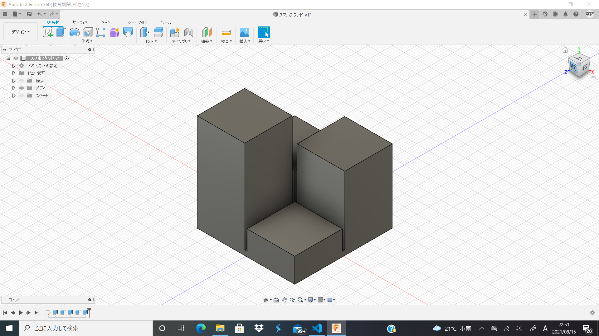
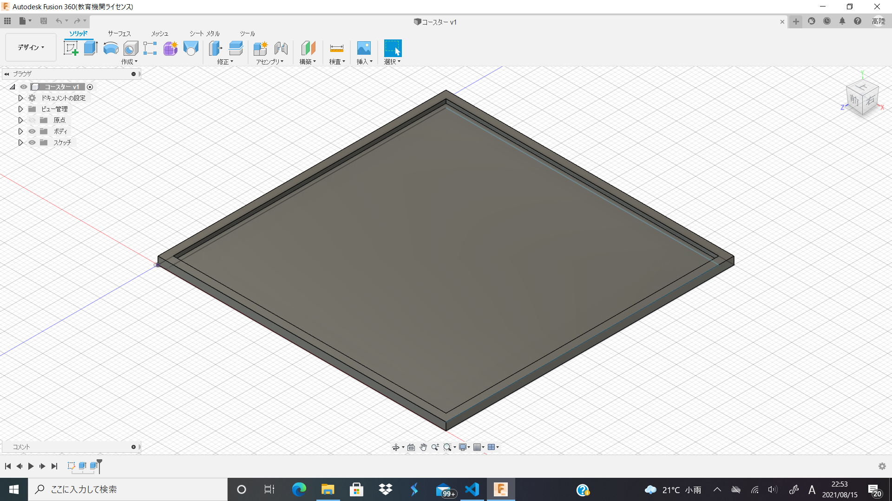
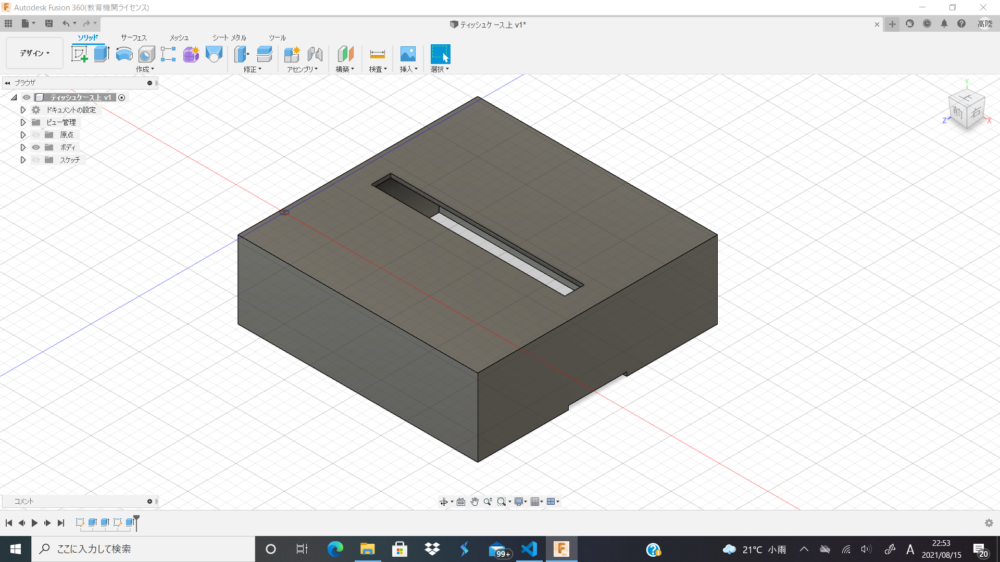

これまでのDOP
前回のミーティングで「解像度の低い世界」とテーマが決まったのでそれにそった製作物を作っていく。
1


今までの幾何学的と解像度の低い世界が互いに干渉を起こし、どっちつかずなデザインになってしまった。この頃は丸を解像度低く表現してもそれを構成する四角にスポットライトが当たらないのでは？と思い、とにかく正方形・立方体をモデルに製作物を作っていった。
また、機能性も重視せず完全なデザイン先行型であった。使えるには使えるのだが、やはり機能性のないモノは難しそうだ。
今後の展望
よりフレキシブルな低解像度を表現するためにだいたい20×20×20を基準としてデザインにしたい。またキューブ型のティッシュの存在を確認したのでそれも活用したい。